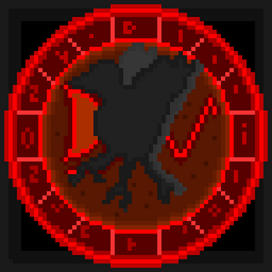

Soul and Xkeleton
Juego publicado a finales de 2021. Fue el primer juego que publique, era un plataformero simple pero con multiples errores de novato y sobre todo un diseño pesimo, que no quito la emocion de ser el primero que hice.
ITCH.IOJuego publicado a finales de 2021. Fue el primer juego que publique, era un plataformero simple pero con multiples errores de novato y sobre todo un diseño pesimo, que no quito la emocion de ser el primero que hice.
ITCH.IOJuego publicado por abril de 2022. Fue el segundo juego que publique, tenia multiples errores igualmente, pero este añadio una caracteristica que era ya el uso de interfaces (aunque solo era el menu principal), tambien algunas mejoras graficas y de fisicas que lo hacia menos horrible que mi anterior proyecto.
Juego publicado a finales de 2023. Fue el tercer videojuego que publique, ya no contenia ciertos errores que cometia en mis anteriores proyectos, pero continuaba con una que otra mala practica, siendo que con este juego me anime a portear juegos a android, asi como dar punto a final a mi era en Godot 3.
Juego publicado a finales de 2024. Con este juego experimente a animarme a añadir nuevas mecanicas y a poner menus de configuracion y traduccion al idioma ingles, asi como tambien mejorar mi apariencia en la pagina de itch.io, lastimosamente cancele el juego por cierta falta de motivacion y desorganizacion al proyecto, pero mantengo la mecanica para un proyecto futuro.